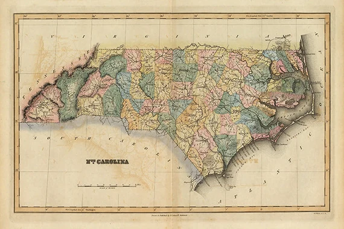

North Carolina Trees
Home
Red Maple
Bradford Pear
Crepe Myrtle
Magnolia
Yellow Poplar

Welcome to my webpage about common North Carolina trees!
Click on a tree using the navigation sidebar to the left for more information.